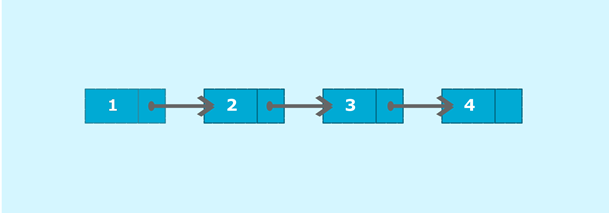
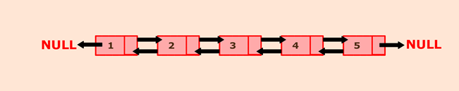

Declartion Of Linked List
Java Program to create and display a singly linked list
The singly linked list is a linear data structure in which each element of the list contains a pointer which points to the next element in the list. Each element in the singly linked list is called a node. Each node has two components: data and a pointer next which points to the next node in the list. The first node of the list is called as head, and the last node of the list is called a tail. The last node of the list contains a pointer to the null. Each node in the list can be accessed linearly by traversing through the list from head to tail.
Consider the above example; node 1 is the head of the list and node 4 is the tail of the list. Each node is connected in such a way that node 1 is pointing to node 2 which in turn pointing to node 3. Node 3 is again pointing to node 4. Node 4 is pointing to null as it is the last node of the list.
Algorithm
Create a class Node which has two attributes: data and next. Next is a pointer to the next node.
Create another class which has two attributes: head and tail.
addNode() will add a new node to the list:
Create a new node.
It first checks, whether the head is equal to null which means the list is empty.
If the list is empty, both head and tail will point to the newly added node.
If the list is not empty, the new node will be added to end of the list
such that tail's next will point to the newly added node. This new node will become the new tail of the list.
a. display() will display the nodes present in the list:
Define a node current which initially points to the head of the list.
Traverse through the list till current points to null.
Display each node by making current to point to node next to it in each
iteration.
Program
public class SinglyLinkedList {
//Represent a node of the singly linked list
class Node{
int data;
Node next;
public Node(int data) {
this.data = data;
this.next = null;
}
}
//Represent the head and tail of the singly linked list
public Node head = null;
public Node tail = null;
//addNode() will add a new node to the list
public void addNode(int data) {
//Create a new node
Node newNode = new Node(data);
//Checks if the list is empty
if(head == null) {
//If list is empty, both head and tail will point to new node
head = newNode;
tail = newNode;
}
else {
//newNode will be added after tail such that tail's next will point to newNode
tail.next = newNode;
//newNode will become new tail of the list
tail = newNode;
}
}
//display() will display all the nodes present in the list
public void display() {
//Node current will point to head
Node current = head;
if(head == null) {
System.out.println("List is empty");
return;
}
System.out.println("Nodes of singly linked list: ");
while(current != null) {
//Prints each node by incrementing pointer
System.out.print(current.data + " ");
current = current.next;
}
System.out.println();
}
public static void main(String[] args) {
SinglyLinkedList sList = new SinglyLinkedList();
//Add nodes to the list
sList.addNode(1);
sList.addNode(2);
sList.addNode(3);
sList.addNode(4);
//Displays the nodes present in the list
sList.display();
}
}
Output
Nodes of singly linked list: 1 2 3 4
Java program to create and display a doubly linked list
Doubly Linked List:
Doubly Linked List is a variation of the linked list. The linked list is a linear data structure which can be described as the collection of nodes. Nodes are connected through pointers. Each node contains two fields: data and pointer to the next field. The first node of the linked list is called the head, and the last node of the list is called the tail of the list. One of the limitations of the singly linked list is that it can be traversed in only one direction that is forward. The doubly linked list has overcome this limitation by providing an additional pointer that points to the previous node. With the help of the previous pointer, the doubly linked list can be traversed in a backward direction thus making insertion and deletion operation easier to perform. So, a typical node in the doubly linked list consists of three fields:
Data :-represents the data value stored in the node.
Previous :- represents a pointer that points to the previous node.
Next :-represents a pointer that points to next node in the list.

Above picture represents a doubly linked list in which each node has two pointers to point to previous and next node respectively. Here, node 1 represents the head of the list. The previous pointer of the head node will always point to NULL. Next pointer of node one will point to node 2. Node 5 represents the tail of the list whose previous pointer will point to node 4, and next will point to NULL..
Algorithm
Define a Node class which represents a node in the list. It will have three properties: data, previous which will point to the previous node and next which will point to the next node.
Define another class for creating a doubly linked list, and it has two nodes: head and tail. Initially, head and tail will point to null.
addNode() will add node to the list:
1)It first checks whether the head is null, then it will insert the node as the head.
2)Both head and tail will point to a newly added node.
Head's previous pointer will point to null and tail's next pointer will point to null.
3)If the head is not null, the new node will be inserted at the end of the list such that new node's previous pointer will point to tail.
4)The new node will become the new tail. Tail's next pointer will point to null.
a. display() will show all the nodes present in the list.
Define a new node 'current' that will point to the head.
Print current.data till current points to null.
Current will point to the next node in the list in each iteration.
Program
public class DoublyLinkedList {
//Represent a node of the doubly linked list
class Node{
int data;
Node previous;
Node next;
public Node(int data) {
this.data = data;
}
}
//Represent the head and tail of the doubly linked list
Node head, tail = null;
//addNode() will add a node to the list
public void addNode(int data) {
//Create a new node
Node newNode = new Node(data);
//If list is empty
if(head == null) {
//Both head and tail will point to newNode
head = tail = newNode;
//head's previous will point to null
head.previous = null;
//tail's next will point to null, as it is the last node of the list
tail.next = null;
}
else {
//newNode will be added after tail such that tail's next will point to newNode
tail.next = newNode;
//newNode's previous will point to tail
newNode.previous = tail;
//newNode will become new tail
tail = newNode;
//As it is last node, tail's next will point to null
tail.next = null;
}
}
//display() will print out the nodes of the list
public void display() {
//Node current will point to head
Node current = head;
if(head == null) {
System.out.println("List is empty");
return;
}
System.out.println("Nodes of doubly linked list: ");
while(current != null) {
//Prints each node by incrementing the pointer.
System.out.print(current.data + " ");
current = current.next;
}
}
public static void main(String[] args) {
DoublyLinkedList dList = new DoublyLinkedList();
//Add nodes to the list
dList.addNode(1);
dList.addNode(2);
dList.addNode(3);
dList.addNode(4);
dList.addNode(5);
//Displays the nodes present in the list
dList.display();
}
}
Output
Nodes of doubly linked list: 1 2 3 4 5
Java program to create and display a Circular Linked List
Circular Linked List:
The circular linked list is a kind of linked list. First thing first, the node is an element of the list, and it has two parts that are, data and next. Data represents the data stored in the node and next is the pointer that will point to next node. Head will point to the first element of the list, and tail will point to the last element in the list. In the simple linked list, all the nodes will point to their next element and tail will point to null.
The circular linked list is the collection of nodes in which tail node also point back to head node. The diagram shown below depicts a circular linked list. Node A represents head and node D represents tail. So, in this list, A is pointing to B, B is pointing to C and C is pointing to D but what makes it circular is that node D is pointing back to node A.
Algorithm
1)Define a Node class which represents a node in the list. It has two properties data and next which will point to the next node.
2)Define another class for creating the circular linked list and it has two nodes: head and tail. It has two methods: add() and display() .
3)add() will add the node to the list:
i)It first checks whether the head is null, then it will insert the node as the head.
ii)Both head and tail will point to the newly added node.
iii)If the head is not null, the new node will be the new tail, and the new tail will point to the head as it is a circular linked list.
4)a. display() will show all the nodes present in the list.
i)Define a new node 'current' that will point to the head.
ii)Print current.data till current will points to head
iii)Current will point to the next node in the list in each iteration.
Program
public class CreateList {
//Represents the node of list.
public class Node{
int data;
Node next;
public Node(int data) {
this.data = data;
}
}
//Declaring head and tail pointer as null.
public Node head = null;
public Node tail = null;
//This function will add the new node at the end of the list.
public void add(int data){
//Create new node
Node newNode = new Node(data);
//Checks if the list is empty.
if(head == null) {
//If list is empty, both head and tail would point to new node.
head = newNode;
tail = newNode;
newNode.next = head;
}
else {
//tail will point to new node.
tail.next = newNode;
//New node will become new tail.
tail = newNode;
//Since, it is circular linked list tail will point to head.
tail.next = head;
}
}
//Displays all the nodes in the list
public void display() {
Node current = head;
if(head == null) {
System.out.println("List is empty");
}
else {
System.out.println("Nodes of the circular linked list: ");
do{
//Prints each node by incrementing pointer.
System.out.print(" "+ current.data);
current = current.next;
}while(current != head);
System.out.println();
}
}
public static void main(String[] args) {
CreateList cl = new CreateList();
//Adds data to the list
cl.add(1);
cl.add(2);
cl.add(3);
cl.add(4);
//Displays all the nodes present in the list
cl.display();
}
}
Nodes of the circular linked list:
1 2 3 4